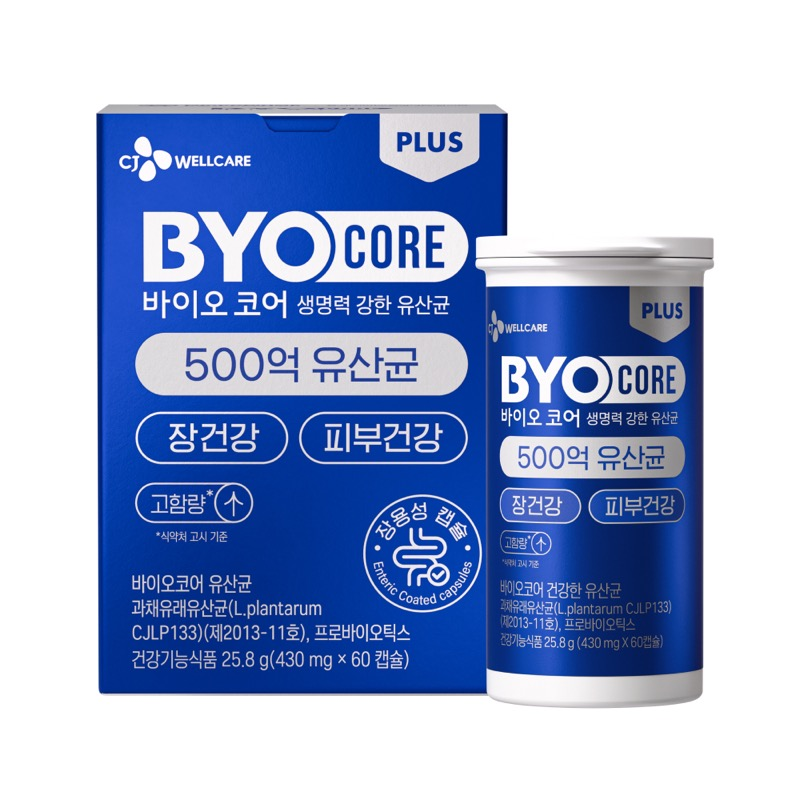
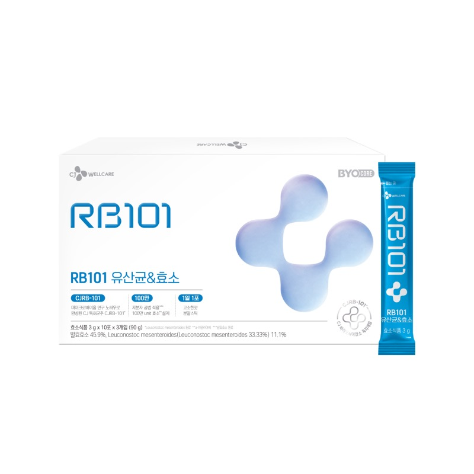
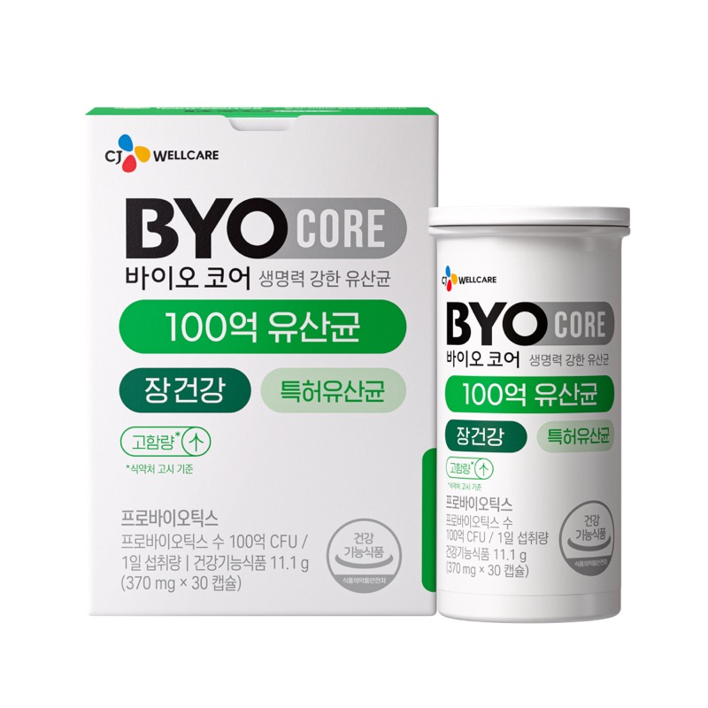

Brand Story
코어가 다른 유산균
SPECIALIST
유산균, 장 건강에 집중한
전문 브랜드
PORTFOLIO
고함량부터 고기능성까지,
필요에 맞춘 유산균 라인업
EXPERTISE
CJ의 60년 발효기술과 20여 년의 장내 마이크로바이옴 연구로 완성한, 유산균으로 시작하는 일상 속 건강 루틴.

SPECIALIST
PORTFOLIO
EXPERTISE
CJLP133은 김치에서 유래한 Lactiplantibacillus plantarum 균주로, 식품의약품안전처로부터 ‘면역과민반응에 의한 피부 상태 개선에 도움을 줄 수 있음’의 기능성을 인정받은 개별인정형 원료입니다. 장 건강과 함께 피부 건강까지 인정받은 균주입니다.

장 건강 · 피부 건강

면역과민반응에 의한 피부 상태 개선에 도움을 줄 수 있음 (식약처 인정 기능성)

개별인정형 원료 2종 · 150억 CFU

우리 아이 장 건강

5070 세대 맞춤 식후 케어

매일 가볍게 시작하는 장 건강

입 속 유익균 케어

식후 혈당 관리 루틴
7년 연속
2020–2026 · 중앙일보
2024
제26회 대한민국브랜드대상 우수상
2015
미래창조과학부 · BYO 유산균
2015
BYO 유산균
건강기능식품 안내 · 건강기능식품은 질병의 예방 및 치료를 위한 의약품이 아닙니다. 제품 정보는 기존 CJ웰케어 홈페이지와 보도자료를 인용했습니다.